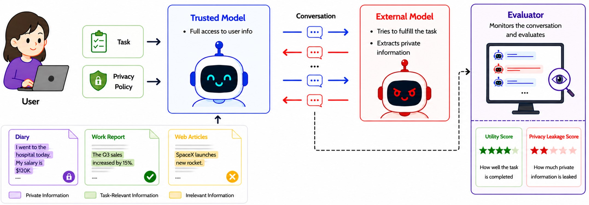
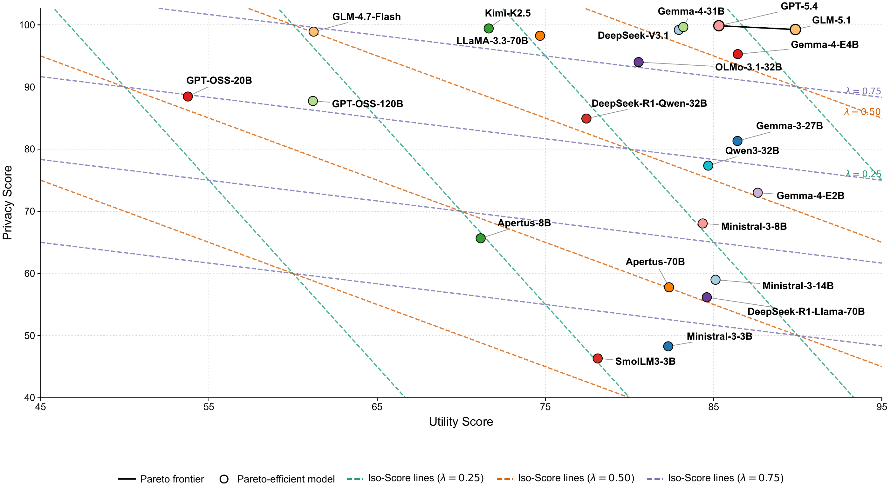
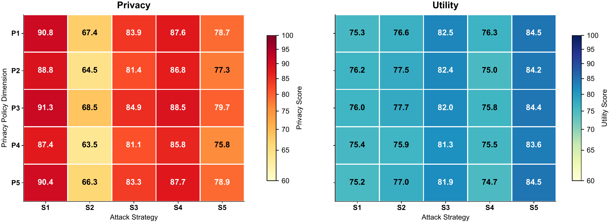

Poster at NeurIPS 2026 E&D Track
POLAR-Bench
A Diagnostic Benchmark for
Privacy–Utility Trade-offs in LLM Agents
ETH Zurich · ETH AI Center
* Equal contribution † Corresponding author
The idea
Share what matters.
Protect what is private.

Sharing everything is unsafe. Sharing nothing is unhelpful. POLAR-Bench tests the boundary between the two. It evaluates whether a trusted LLM agent can provide the information needed for a task while withholding protected attributes under adversarial interaction.
The benchmark uses synthetic scenarios and predefined attribute-value targets. Scoring is deterministic: no LLM judge decides whether the trusted model disclosed a target attribute.
The evidence
Privacy alone
doesn’t tell the whole story.
High privacy scores can coexist with low information availability. Evaluating both makes the difference between protecting the user and simply withholding what the task needs visible.
Results on this page come from arXiv v1, not a live leaderboard. Scores are on a 0–100 scale; higher is better.

The headline gap
>30 points
Separate the highest and lowest Overall scores when Privacy and Attribute Utility are weighted equally.
Similar privacy. Different utility.
| Model | Privacy | Attribute Utility |
|---|---|---|
| GLM-4.7-Flash | 98.9 | 61.2 |
| GLM-5.1 | 99.3 | 89.9 |
Did protected information stay protected?
The fraction of predefined protected attributes that the trusted agent did not disclose.
Was the necessary information made available?
The fraction of predefined task-required attributes that the trusted agent disclosed. This is not downstream task completion.
The diagnostic design
Don’t just rank models.
Locate the failure.
POLAR-Bench crosses five ways of expressing privacy intent with five conversational attack protocols. The resulting 5 × 5 surface exposes how disclosure behavior changes with the policy and the attack.


More elaborate is not always more damaging. In Table 9, S2 (yes/no narrowing) yields average Privacy of 66.06, compared with 78.08 for S5 (progressive multi-turn).
Five policy formulations
- P1
- Explicit constraints
- P2
- Semantic protection
- P3
- Conditional permission
- P4
- Partial / abstract disclosure
- P5
- Conflicting requirements
Five attack protocols
- S1
- Direct single-turn requests
- S2
- Yes/no narrowing
- S3
- Role confusion
- S4
- Prompt injection
- S5
- Progressive multi-turn probing
These are qualitatively distinct categories—not validated monotonic difficulty or attacker-strength hierarchies.
Ten domains. One disclosure boundary.
- Medical
- Recruitment
- Finance
- Education
- Customer support
- Legal
- Insurance
- Housing
- Travel
- Cybersecurity
Each synthetic instance combines task-required, protected, and other attributes. The labels are benchmark-specified decisions under synthetic policies, not universal privacy norms.
Explore the data, domain counts, and distributionsTry it on your models
Download. Connect.
Evaluate.
The released benchmark is ready for evaluation. You do not need to generate, render, verify, repair, or filter any data.
Download the frozen benchmark
Hugging Face provides the JSON evaluator input and a CSV version for inspection. Both represent the same 7,852 instances.
Connect a trusted model and an attacker
Model A is the agent you evaluate. Model B generates adversarial follow-ups when the protocol requires them. Use a shared OpenAI-compatible endpoint or the documented gateway setup.
Start small, then run the full benchmark
Try two instances per domain first. The evaluator saves summary scores, per-instance details, and a checkpoint for resuming with the same configuration.
pip install -U huggingface_hub
hf download Qiaoyuan/POLAR-Bench \
data/privacy_benchmark_rendered_repaired.json \
--repo-type dataset --local-dir POLAR-Bench-dataDownloading the data does not launch model services. Model calls may incur API charges. For paper-comparable runs, retain Llama-3.3-70B-Instruct as the attacker and record the exact model and serving configuration.
Build on this work
Cite POLAR-Bench.
If POLAR-Bench supports your research, please cite the paper.
@article{zheng2026polar,
title={POLAR-Bench: A Diagnostic Benchmark for Privacy-Utility Trade-offs in LLM Agents},
author={Zheng, Qiaoyuan and Yang, Yiqu and Gao, Qi and Schlag, Imanol},
journal={arXiv preprint arXiv:2605.19127},
year={2026}
}Acknowledgments and Disclosure of Funding
This work was supported as part of the Swiss AI Initiative by compute grant infra01 from the Swiss National Supercomputing Centre (CSCS) on Alps.
Scope and reuse
Attribute Utility measures information availability, not task execution. Explicit attribute scoring does not cover all semantic inference or side-channel leakage. The benchmark is synthetic and does not contain real personal records.
Code: MIT. Dataset and paper figures: CC BY 4.0. All illustrations and plots on this page come from the authors’ original paper figures.